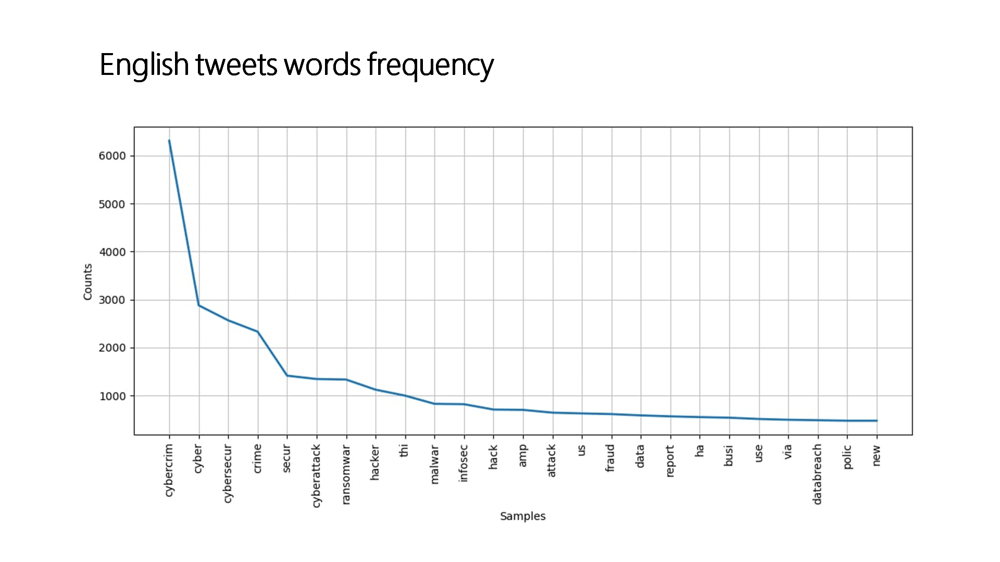
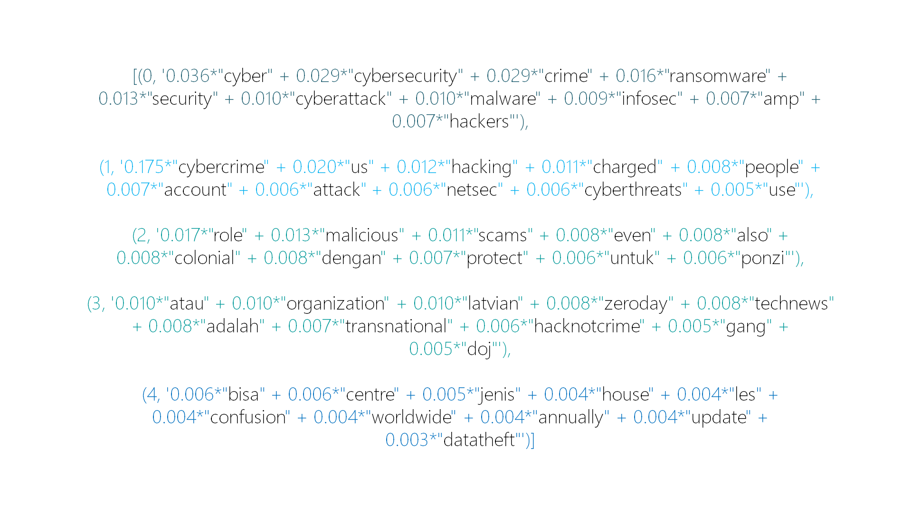
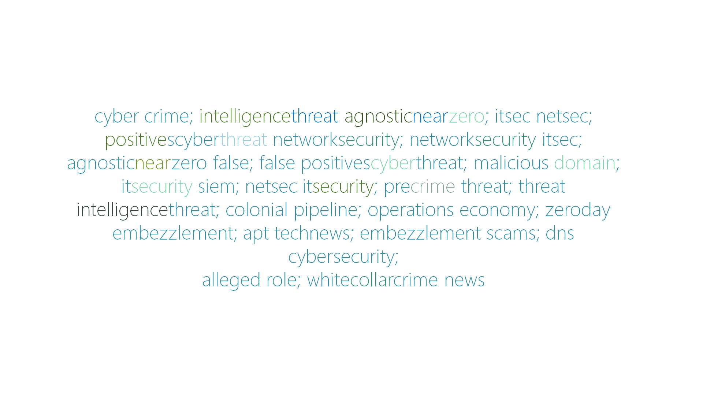
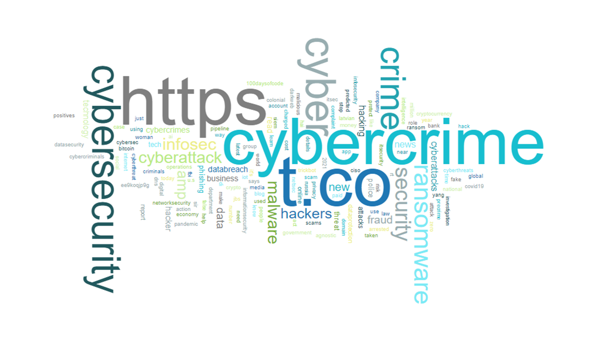
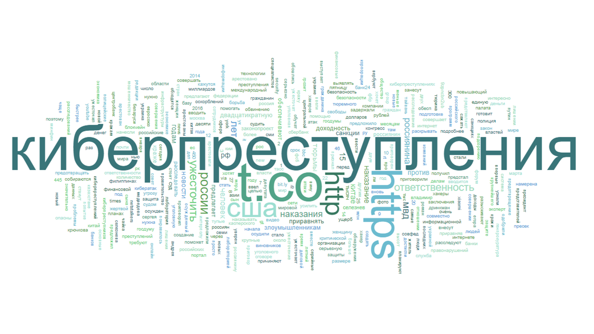
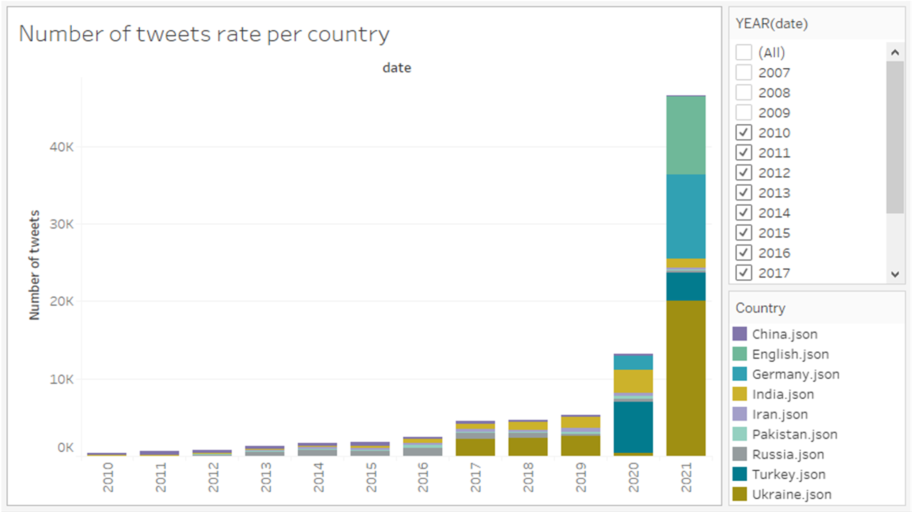
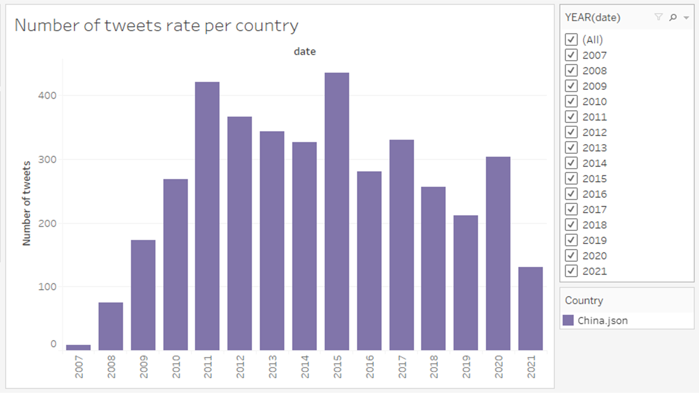
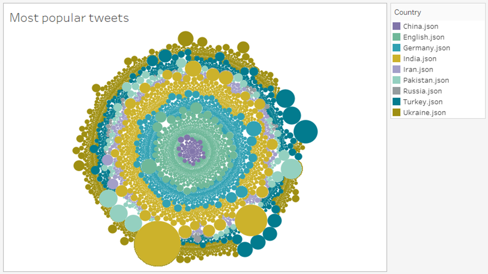

|  |
English tweets word frequency. As we can see from the line chart in Application 1, the most common words are cybercrime and cyberattacks along with security, which is no surprise. What is interesting, is that words frequency analysis also highlighted such words as ransomware, malware, fraud and business. Based on that, we can make a prediction that English speaking Twitter users concerned not only with the safety of their data but also with the safety of their financial activities. And the second conclusion might be that they are also concerned with the risks within the business field. |
|  |
English tweets topic modelling. The results of this analysis were not surprising as most topics started with the prefix cyber-. The results were divided into five groups and their interpretation could only be vague. The first and the second ones, presumably, lied within the field of cybersecurity. All of the others include some surprising part, such as “latvian”, “zeroday”, so their interpretation does not seem reasonable at all, as we do not want to speculate on the topic.
|
|  |
English tweets collocations. Here we can see that even though words with the prefix cyber- still highly present, there are some new parts, which could represent the concrete topics of cybercrimes, the way they could be made and the spheres that are in danger. |
|  |
English tweets cloud of words and words frequency. The most common ones are, apparently, links to the third party along with the cyber- words. Also popular the words, meaningfully connected with the research topic. |
|  |
Russian tweets cloud of words and words frequency. Links to the third party also common in Russia. But interesting enough, there are also such words as “USA”, “toughen up”, “Russian”, “punishments”, “responsibility”, which, joined together give us a gloomy picture. |
|  |
Number of tweets rate per country. The graph is showing that the interest in the research topic gradually grew, only to show skyrocketing results this year. Interesting enough, if we filter and take a look at the tweets number per country, we will see different results. For example, Russia and China show a decrease in interest in the topic in recent years. |
|  |
English tweets ratio. As we can see from the bubble chart, the leading language is still English, but other languages are also present. Most frequently those hashtags were used in Germany, India, Italia, Indonesia. |
|  |
Most popular tweets. Surprisingly, leaders in popularity were not in English, they were from India, Ukraine and Turkey. Also, worth notice that tweets on the topic from China were the least popular. |